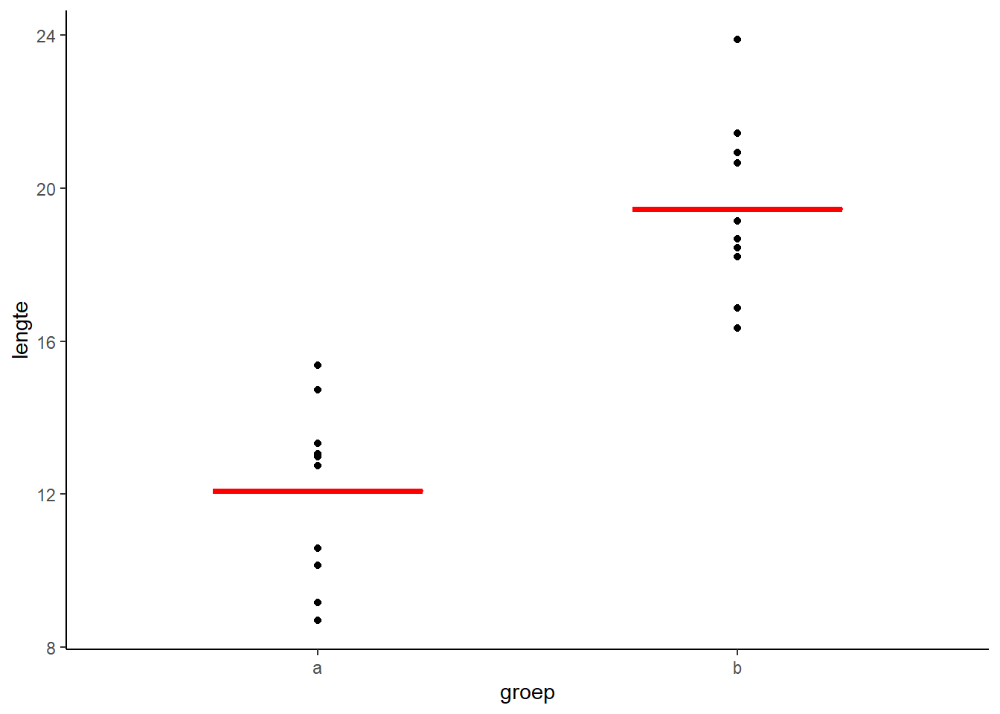

F-toets
In jaar 1 zijn jullie de t-toets tegengekomen. Hiermee test je (in het geval van een onafhankelijke t-toets) of de gemiddelden van twee groepen significant van elkaar verschillen. Met andere woorden:
- Hoe waarschijnlijk is het dat je een minstens zo groot verschil krijgt in de steekproefgemiddelden, terwijl er in werkelijkheid geen verschil is (dus de kansverdeling onder de H0).
- Is die waarschijnlijkheid (de p-waarde) minder dan de drempelwaarde (\(\alpha\), meestal 0,05), dan wordt de H0 verworpen en zeggen we dat het verschil significant is.
Wat je (of de computer) doet is een kansverdeling maken van de mogelijke verschillen in gemiddelden.
Begin twintigste eeuw heeft Ronald Fisher (zie wikipedia) een alternatieve manier ontwikkeld op basis van verklaarde variantie: de F-toets:
\[F=\frac{MS_{verklaard}}{MS_{rest}}\] MS staat voor de Mean Squares, oftewel de gemiddelde kwadraatafstand. Deze manier van toetsen wordt variantieanalyse genoemd, of op zijn Engels Analysis of Variance: ANOVA.
Als voorbeeld de data uit de vorige oefening. De totale variantie in de data vind je door een horizontale lijn (dus a=0) door het gemiddelde te trekken (dus b zo kiezen dat SSE minimaal is). De gemiddelde kwadraatafstand wordt dan de gevonden SSE gedeeld door 2 (het aantal waarnemingen - 1). Dat is MStotaal.
Als je nu a en b zo kiest dat de SSE geminimaliseerd wordt, hou je restvariantie over. Deel dit door 29 en je hebt MSrest. De verklaarde variantie is MStotaal - MSrest.
Gelukkig hoef je niet zelf te goochelen met deze varianties, daar hebben we R voor. Wat je wel moet onthouden is dat hoe beter de fit van het statistisch model, des te hoger F wordt.
Met wat extra gegoochel met statistisch formules kan je aantonen dat de kansverdeling van F dezelfde is als de kansverdeling van t2. De berekende waarde voor F (via bovenstaande formule) geeft precies dezelfde uitkomst als de berekende waarde voor t. Kijk maar eens naar onderstaande figuur en de bijbehorende toetsen.

t.test(df$lengte~df$groep, var.equal=TRUE)##
## Two Sample t-test
##
## data: df$lengte by df$groep
## t = -7.1998, df = 18, p-value = 1.063e-06
## alternative hypothesis: true difference in means is not equal to 0
## 95 percent confidence interval:
## -9.529953 -5.224566
## sample estimates:
## mean in group a mean in group b
## 12.07949 19.45674summary(lm(df$lengte~df$groep))##
## Call:
## lm(formula = df$lengte ~ df$groep)
##
## Residuals:
## Min 1Q Median 3Q Max
## -3.3835 -1.6107 0.1688 1.2992 4.4270
##
## Coefficients:
## Estimate Std. Error t value Pr(>|t|)
## (Intercept) 12.0795 0.7245 16.67 2.17e-12 ***
## df$groepb 7.3773 1.0246 7.20 1.06e-06 ***
## ---
## Signif. codes: 0 '***' 0.001 '**' 0.01 '*' 0.05 '.' 0.1 ' ' 1
##
## Residual standard error: 2.291 on 18 degrees of freedom
## Multiple R-squared: 0.7423, Adjusted R-squared: 0.7279
## F-statistic: 51.84 on 1 and 18 DF, p-value: 1.063e-06Vergelijk je de p-waardes, dan zie je dat ze precies gelijk zijn. En de F-waarde is het kwadraat van de t-waarde (ga zelf na).
Waarom heb je dan toch de t-toets moeten leren? Twee redenen:
- Met een t-toets kan je ook eenzijdig testen (H1: a<b)
- Bij een t-toets heb je de keuze om wel of niet de aanname te maken dat de variantie gelijk is voor beide groepen. Bij ANOVA maak je altijd die aanname!